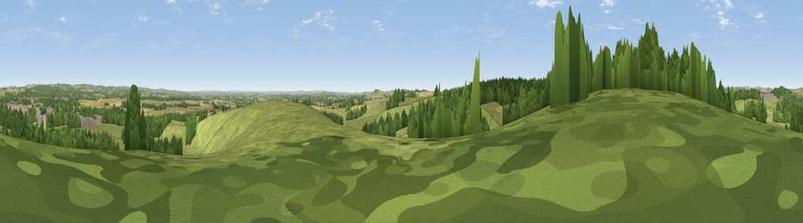

Viewpoint near Perham Down
#21269 in England · top 31% of its area beats it · near Perham DownWhere it is
The exact computed spot (SU 25175 47925). Click the marker for map links.
The view, rendered

A 360° render of this exact spot computed from the terrain model, tree cover and land cover — summer colours, afternoon light, calibrated against photographs of famous viewpoints. Real trees, hedges and buildings will differ in detail.
The panorama
Grey silhouette: terrain skyline in each direction (720 bearings, Earth curvature and refraction included). Dashed green: skyline with trees (+15 m) and buildings (+8 m) as obstacles. Blue strip: how far the ground is visible on each bearing.
Where the view opens
Wedge length = distance to the farthest visible ground on that bearing (vegetation-aware). Rings at 10, 25 and 50 km.
What fills the view
51% grassland · 27% woodland · 19% cropland · 3% built-up
Angular shares of the visible panorama (visual magnitude), not map area. Landscape diversity 0.49 (0–1 Shannon).
Key numbers
More beautiful places nearby
The staircase of upgrades: each row has a higher view potential than everything closer. Driving times are estimates from straight-line distance, calibrated against real road routing — check an actual route before setting out.
| Place | Direction | Drive | Score |
|---|---|---|---|
| Viewpoint near Perham Down | ESE · 1 km | ~2 min | 57.1 |
| Viewpoint near Shipton Bellinger | SSW · 3 km | ~7 min | 61.0 |
| Viewpoint near Cholderton | SW · 6 km | ~14 min | 61.6 |
| Viewpoint near Bulford | SW · 8 km | ~16 min | 70.3 |
| Viewpoint near Oare | NNW · 17 km | ~30 min | 72.9 |
| Martinsell viewpoint | NNW · 17 km | ~30 min | 77.3 |
| Viewpoint near Berwick St John | SW · 42 km | ~62 min | 78.2 |
| Viewpoint near Buriton | ESE · 54 km | ~76 min | 80.0 |
51.22996, -1.64083 · source: screening · position refined by local search. Computed location — check access rights before visiting.